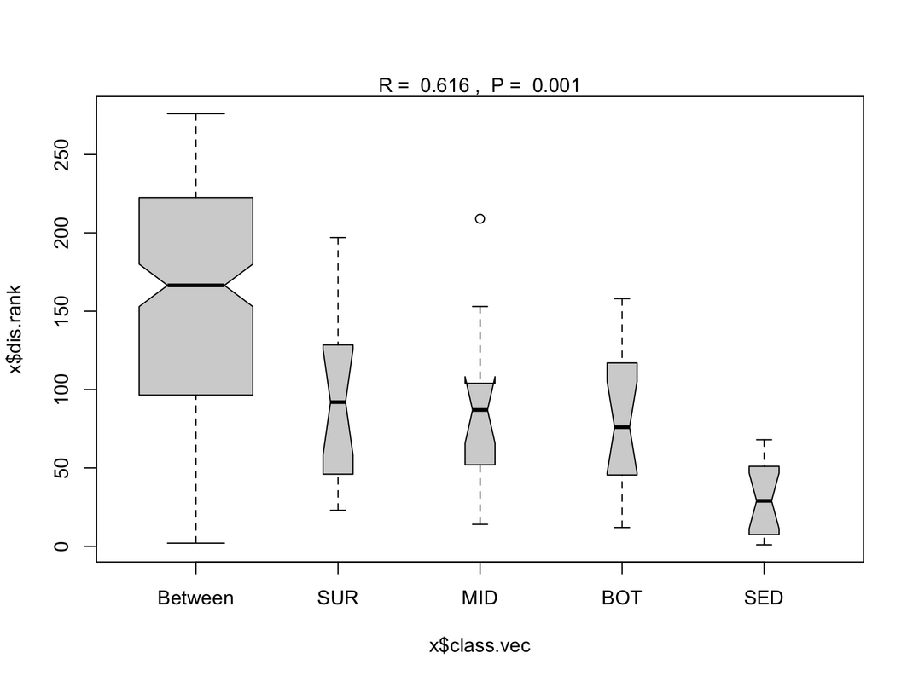
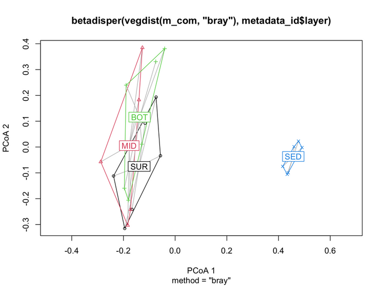

Date: July 23, 2025
What is the ANOSIM R statistic? R measures how well the groups are separated based on community composition.
It ranges from -1 to 1:
Significance values (p-values)
# Run ANOSIM for layer variable
anosim_layer <- anosim(m_com, grouping = metadata_id$layer, distance = "bray", permutations = 999)
> anosim_layer
Call:
anosim(x = m_com, grouping = metadata_id$layer, permutations = 999, distance = "bray")
Dissimilarity: bray
ANOSIM statistic R: 0.6162
Significance: 0.001
Permutation: free
Number of permutations: 999
# Plot ANOSIM distances
plot(anosim_layer)

PERMANOVA is a non-parametric method used to test whether multivariate community composition differs among groups or along environmental gradients.
# Run PERMANOVA for layer variable
adonis <- adonis2(m_com ~ layer, data = metadata_id, permutations = 999, method = "bray")
> adonis
Permutation test for adonis under reduced model
Permutation: free
Number of permutations: 999
adonis2(formula = m_com ~ layer, data = metadata_id, permutations = 999, method = "bray")
Df SumOfSqs R2 F Pr(>F)
Model 3 2.1217 0.43055 5.0404 0.001 ***
Residual 20 2.8062 0.56945
Total 23 4.9279 1.00000
---
Signif. codes: 0 ‘***’ 0.001 ‘**’ 0.01 ‘*’ 0.05 ‘.’ 0.1 ‘ ’ 1
Microbial community composition differs strongly and significantly across vertical layers, layer is a major driver of community structure in this dataset.
PERMANOVA result (R² = 0.43) is consistent with your ANOSIM result (R = 0.62).
Both indicate strong vertical stratification of communities.
Next, test PERMDISP (beta dispersion test) using betadisper based on Bray–Curtis dissimilarity,
to test homogeneity of multivariate dispersion among layers:
# Run PERMDISP for layer variable
betadisper(vegdist(m_com, "bray"), metadata_id$layer) |> anova()
Analysis of Variance Table
Response: Distances
Df Sum Sq Mean Sq F value Pr(>F)
Groups 3 0.044931 0.0149771 4.8561 0.01069 *
Residuals 20 0.061683 0.0030842
---
Signif. codes: 0 ‘***’ 0.001 ‘**’ 0.01 ‘*’ 0.05 ‘.’ 0.1 ‘ ’ 1
# Visualized by plot
plot(betadisper(vegdist(m_com, "bray"), metadata_id$layer))

In general, NMDS was used to visualize differences in community composition based on dissimilarities matrix. Statistical significance of group differences was assessed using PERMANOVA (adonis2) and supported by ANOSIM. Homogeneity of multivariate dispersion was evaluated using PERMDISP to ensure that significant results reflected differences in community composition rather than within-group variability.